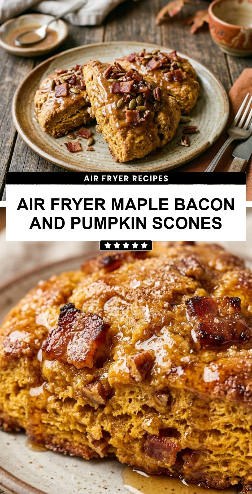

Air Fryer Maple Bacon and Pumpkin Scones
October 19, 2026

Fall is the perfect time to embrace cozy flavors, and there is nothing quite as comforting as a warm scone straight from the oven—or in this case, the air fryer. These Air Fryer Maple Bacon and Pumpkin Scones bring together the earthy sweetness of pumpkin, the rich aroma of maple, and the irresistible crunch of salty bacon. It is a flavor profile that hits every note, making it the ultimate treat for a chilly morning or a weekend brunch.
Recipe Information
Prep Time: 15 minutes
Cook Time: 12 minutes
Total Time: 27 minutes
Servings: 8 scones
Difficulty Level: Medium
Nutrition Information
Calories per serving: 310 kcal
Protein: 6g
Carbohydrates: 42g
Fat: 14g
Fiber: 2g
Sugar: 12g
Sodium: 480mg